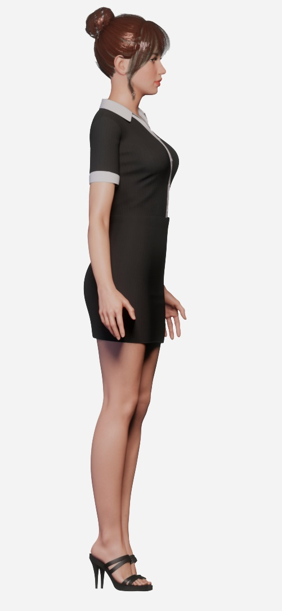
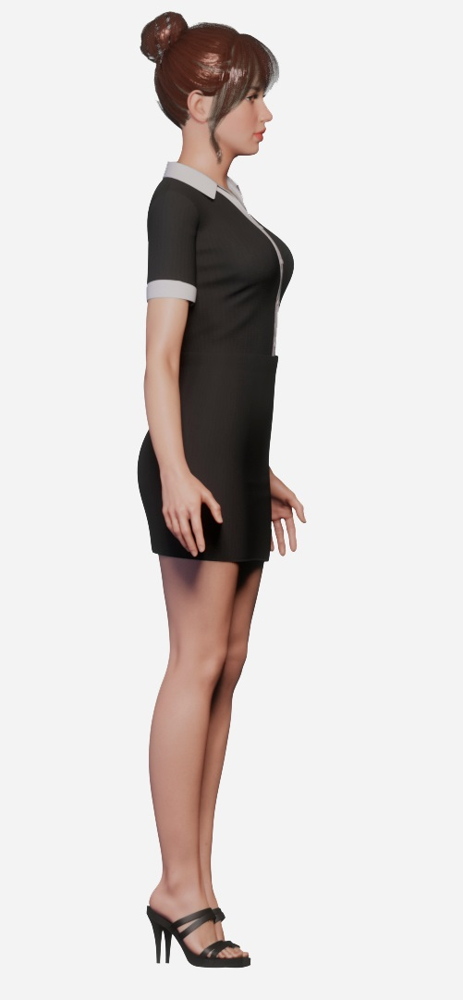
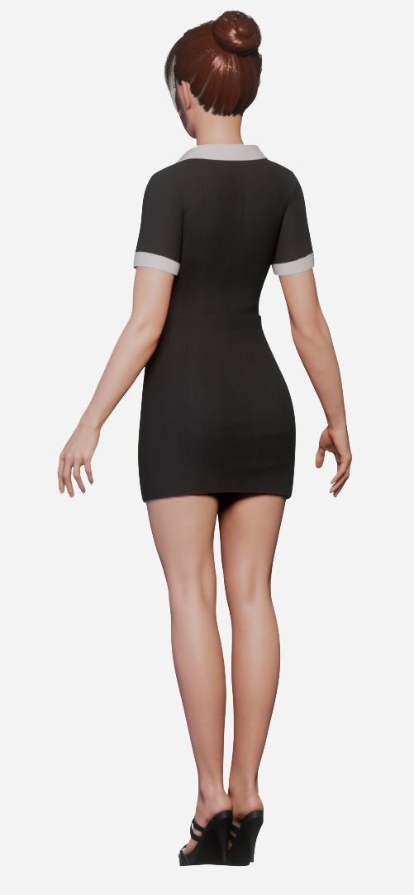
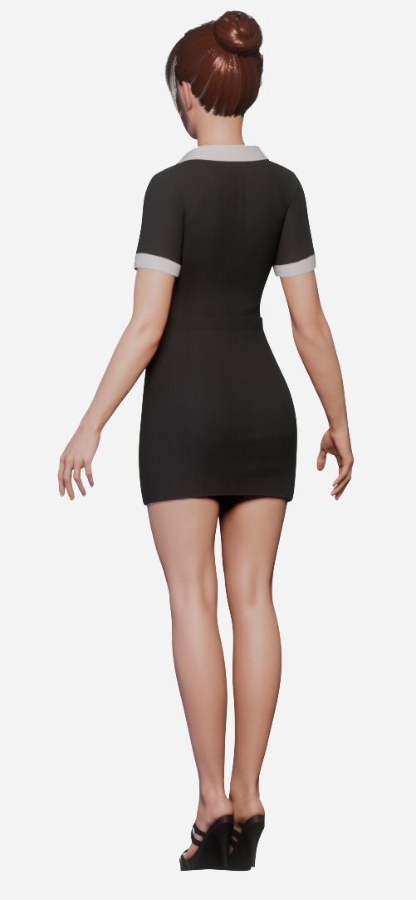
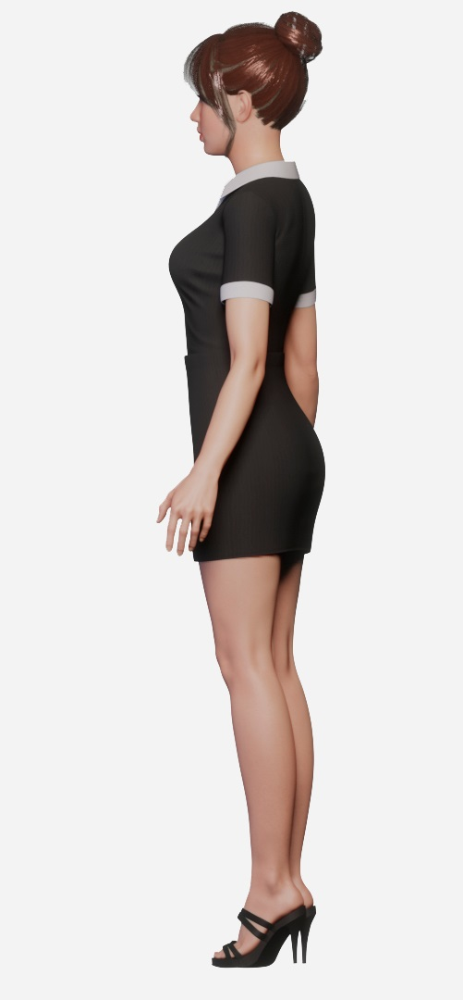
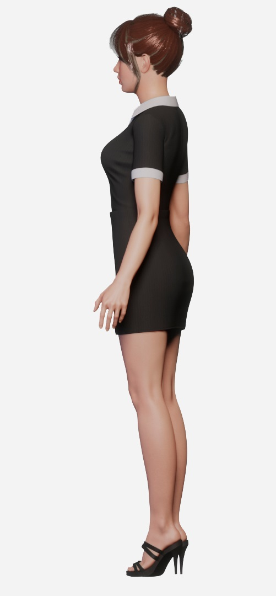
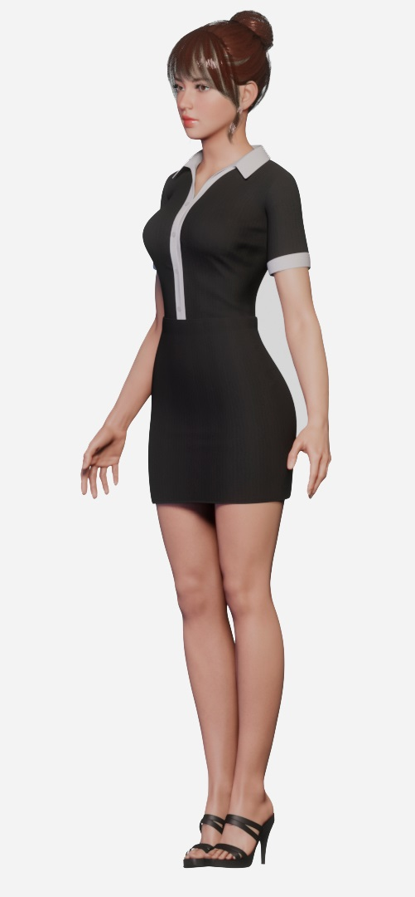
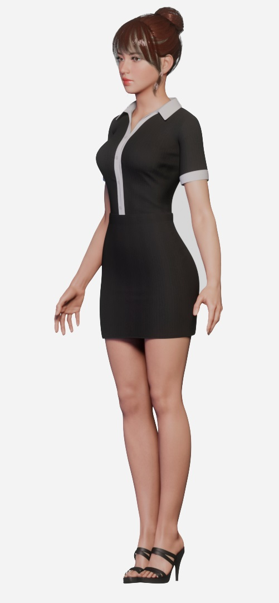

ОБО МНЕ


Привет! Меня зовут Дина — я тату мастер
В данной сфере 5 лет и за моей спиной больше 500 сеансов разной сложности
Работаю в авторском стиле — акварель, ботаническая тематика
Эскизы рисую индивидуально — бесплатно перед сеансом, под запрос клиента, не повторяю ни свои, ни чужие работы
-
Набор для заживления
Пленка и мазь или заживляющая пленка
-
Бесплатный эскиз
Рисую и показываю перед сеансом
-
Перекрытие старых тату
Перекрою твои шрамы и неудачное тату
-
Уютная атмосфера
Душевные разговоры за чашечкой чая
Временных татуировок не существует, поэтому эта история только для тех, кто уверен в своих решениях и готов носить рисунок на своем теле всю жизнь
ПОРТФОЛИО


Перекрытие шрамов и неудачных тату
Перекрытия — это всегда непросто:- ограниченная цветовая палитра, так как светлые и теплые оттенки не перекрывают темные
- эскиз должен скрыть старую татуировку полностью, поэтому он обычно больше по размеру
- темные части старой татуировки останутся там, где они были, и нужно под них подстраиваться
Выпуклость никуда не пропадет и ее нужно прятать рисунком, поэтому если их закрасить просто так, они станут заметнее на фоне ровной кожи
Любые шрамы перекрывать нужно очень осторожно


Если у тебя есть то, что хочешь перекрыть — то тебе ко мне
Напиши мне и мы обсудим об этом — консультация бесплатно
Записаться на сеансУслуги
Нажми на место, где хотите набить тату, чтобы узнать цену
Эта процедура — не из приятных, и она доставляет определенные сложности вне зависимости от пола и возраста человека. Существует так называемая карта боли, которая иллюстрирует самые болезненные и относительно неприятные области для нанесения рисунка.

Наименее болезненно
Очень больно


 



 


 


 



Восприимчивость различных участков неодинакова. На болезненность влияют разные факторы: плотность кожи, количество нервных окончаний в определенной области, удаленность от кости (если кость близко к коже, будет больно при нанесении тату).
Важно! Если вам становится нестерпимо больно, не надо дергаться и извиваться под рукой мастера. Лучше всего прервать сеанс и продолжить в следующий раз.
Если знаешь размер и место тату, то смело записывайся
Записаться на сеансКонтакты